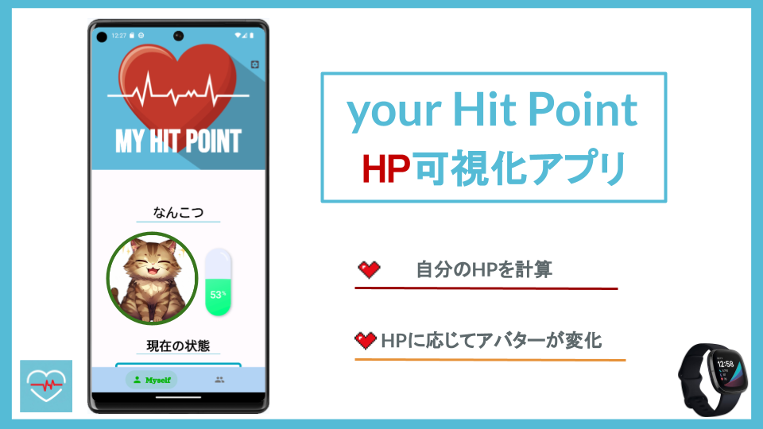
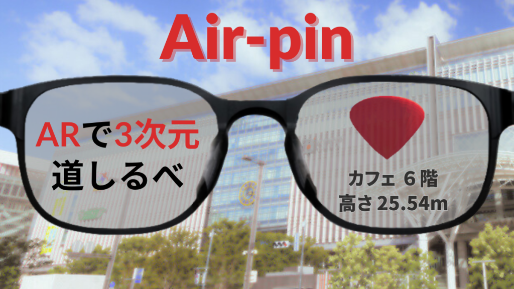
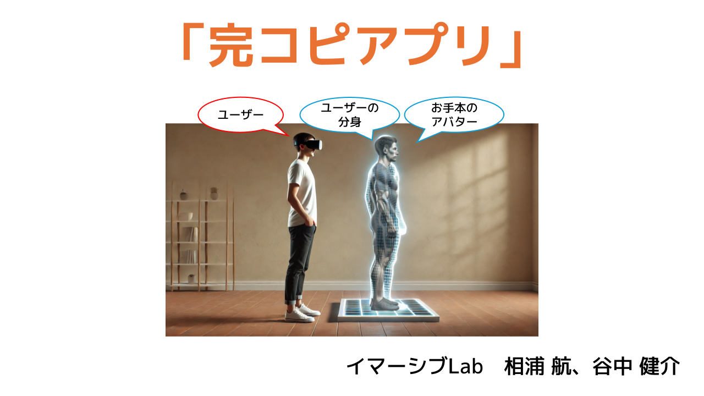
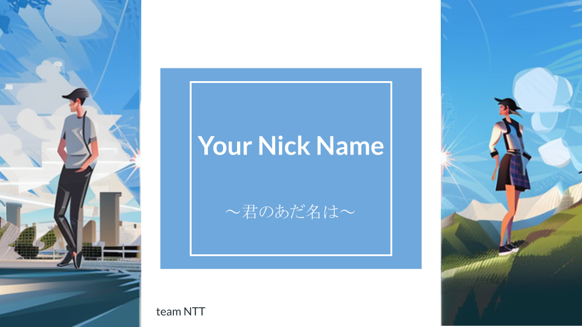

Develop
Overview
Alongside my research activities, I develop healthcare apps that make daily life more enjoyable, novel interaction experiences using AR/VR, and web applications that facilitate everyday communication. I actively participate in hackathons and contests, emphasizing the ability to turn ideas into reality through implementation and team development.
Apps
your hit point

Overview: An app that retrieves physical information such as sleep duration, heart rate, and step count from a smartwatch (Fitbit) and visualizes the user’s “HP (Hit Points).” The HP is linked to the state of an in-app pet, so the desire to care for the pet naturally motivates the user to maintain their own health. (An improved version, “Your Magic Point,” is currently in development.)
Role: Backend / App Design / Management
Tech stack: - Python / Flutter - Firebase - Android Studio / Fitbit API
Links: - Protopedia
Air-Pin

Overview: An app that displays destination locations with three-dimensional information on AR glasses. Unlike conventional 2D pins used in Google Maps, it projects a 3D pin adjusted to the floor level of the destination into AR space, incorporating height information.
Role: AR Development
Tech stack: - Unity / Python - Cloud Run / Geospatial API - XREAL Air / PLATEAU
Links: - Protopedia
Perfect Copy App (Immersive Lab)

Overview: A VR app that allows users to observe the degree of synchronization between their own movements and a reference motion from a third-person perspective. DeepMotion was used to create the reference motion (animation), which served as the basis for building a training environment prototype in VR space.
Role: —
Tech stack: - Unity / Python - DeepMotion - Meta Quest 3 / Full-body tracking devices (Base station 2.0, Vive tracker 3.0)
Links: - Protopedia
your nick name

Overview: A Slack bot that analyzes the content of messages posted on Slack and automatically generates and outputs a “nickname” for the message author. Created out of a desire to do something fun with ChatGPT.
Role: —
Tech stack: - Python / Slack API - ChatGPT API
Links: - Protopedia
Achievements
Grants & Funding
| Year | Program | Organization |
|---|---|---|
| 2025 | QREC Idea Battle 2025 2nd | Kyushu University |
| 2025 | QREC Acceleration Program 2025 Summer | Kyushu University |
| 2025 | QREC Idea Battle 2025 1st | Kyushu University |
| 2025 | QREC Acceleration Program 2025 Spring | Kyushu University |
| 2023 | Fukuoka Mitoujin 2023 Grow | Fukuoka Mitoujin Consortium |
Awards (Development / Product)
- 2025 Kyushu University QREC Acceleration Program 2025 Spring — Selected (work: Perfect Copy App)
- 2024 Fukuoka Prefecture IT Startup Business Award 2024 — Student Division Excellence Award, F Ventures Award (work: your hit point)
- 2023 Engineer Friendly City Fukuoka Engineer Driven Day 2023 — Product Development Division Award (work: your hit point)
- 2023 Kyushu Challenge Caravan Contest 2023 — Grand Prize (work: your hit point)
- 2023 Fukuoka Mitoujin 2023 Grow — Selected (work: Air-Pin)